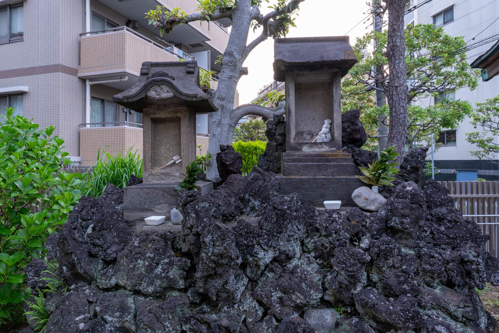
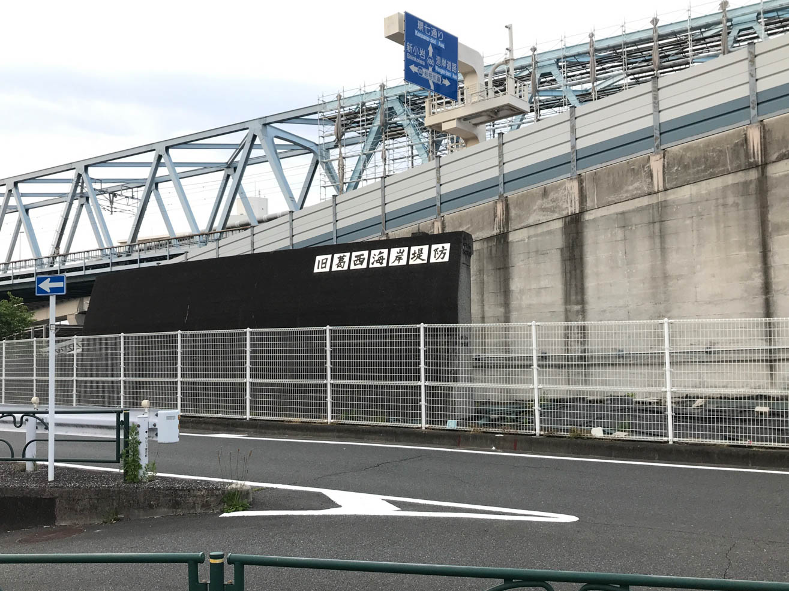

小島八幡神社境内の水神社


基本情報
| 種別 | 水神社 |
|---|---|
| 建立年 | 不明 |
| 大きさ | — |
| 所在地 | 東京都江戸川区西葛西２丁目１－１６ |
| 座標 | 35.66589452, 139.85200637 |
| 標高 | 未調査 |
| 備考 | — |
碑文
保存状態
地理・浸水情報
| 最寄り河川 | 未調査 |
|---|---|
| 河川からの距離 | 未調査 |
| 浸水想定区域 | 未調査 |
| 想定浸水深 | 未調査 |
| 標高・水位 | 標高未調査 ／ 水位範囲未調査 |
調査メモ
小島八幡神社は、西葛西八幡神社ともいう。
境内奥には、稲荷神社隣に富士塚があり、頂上に水神社と浅間神社社祠が祀られている。
東京都神社名鑑1（東京都神社庁著）でも、境内に水神社（水波能売神）の所在が記載されているが、２基の祠のどちらが水神祠か判明していない。2基とも風化が激しく、碑文は確認できない。保存状態としては（2基とも）☆☆☆☆☆
当八幡社は度々の風水害で文献が流出したため、創建の詳細も不明。 昭和57年9月社殿の改修を宿して例大祭が執り行われている。 社殿や鳥居などたいへん美麗。旧小島村の鎮守だった。
調査は2026年5月初旬だったが、蚊の襲来に悩まされた。神社向かいには「旧葛西海岸堤防」が保存されていて、その断面を観察することもできる。 江戸川区史2によると、葛西海岸堤防はたび重なる高潮・洪水から葛西地域を守るために建設された延長約4.5kmの海岸堤防であり、キティ台風などの被害を受けて本格整備が進められた。 昭和26年に着工、昭和32年に完成したのち、地盤沈下や高潮対策として昭和38年から堤防高をAP+6.4〜7.5m3へかさ上げする工事が行われ、昭和42年に完了した。その後、葛西沖の埋立と葛西臨海公園・葛西海浜公園の造成により海岸線が沖合へ移動し、前面に新たな護岸が築かれたことで、旧堤防は直接海に面さない「内陸の堤防」となりその役割を終えている。
小島八幡神社前の「旧葛西海岸堤防」のあたりは、1972年頃まで実際の海岸線（海側はすぐ干潟・浅い海）で、改修された堤防はAP+7.5mまでかさあげられ、高潮時は海も見えなかったという。昔はここが海岸で、高潮を防ぐための高い堤防が海を遮っていた。今はその前が埋め立てられている。